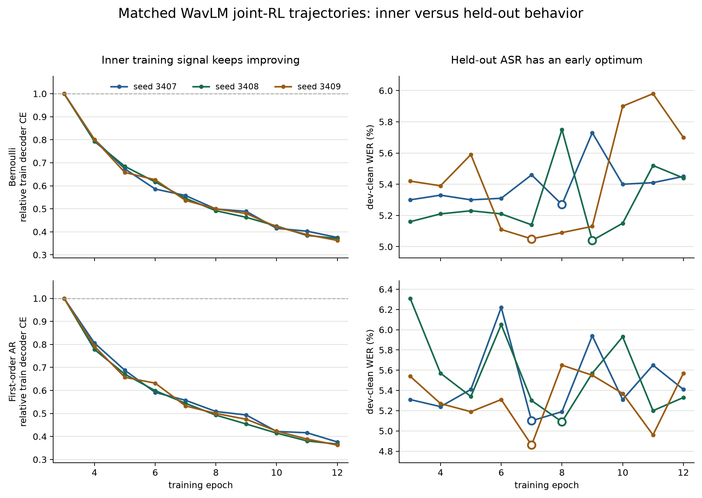

Bottom line
The formulation applies; the expensive machinery may not be needed
Treat decoder adaptation as the inner problem and held-out ASR plus the kept-ratio penalty as the outer problem. Keep hard boundary sampling and GRPO. For the first test, change the reward to measure query loss after one temporary decoder update.
The important distinction is temporal. The current segmenter is rewarded for boundaries that the current decoder likes. The scientific goal is closer to boundaries that permit a decoder to learn and generalize well. Those rankings can differ.
This does not imply that a full second-order bilevel optimizer is the next move. A support/query split and a one-step decoder lookahead test the central idea while preserving the current discrete policy and deployment path.
Problem mapping
Our current loop is joint training, not bilevel training
Let φ be segmenter parameters, πφ the boundary policy, a a hard boundary sequence, and θ the trainable decoder projection and LoRA parameters. The current sampled reward has the form:
The reward is detached; the segmenter receives a GRPO update, while decoder CE updates θ. Both happen in the same loop. A bilevel statement instead asks how well the decoder performs after adapting to the boundary distribution:
The support/query distinction matters: support speech trains the temporary decoder, and separate query speech judges whether the resulting update generalizes.
| Part | Current joint RL | Bilevel version |
|---|---|---|
| Decoder | Updated by transcript CE on the training stream | Temporarily adapted on support speech for each sampled boundary policy |
| Segmenter score | NLL from the decoder before it adapts to the sampled boundaries | Query loss after the temporary decoder adaptation |
| Data split | Decoder update and segmenter reward come from the same training stream | Decoder adapts on S; the segmenter is judged on held-out Q |
| Discrete boundaries | GRPO score-function update | Keep GRPO; only change when and where its scalar reward is measured |
Pilot on completed runs
The inner and held-out checkpoints disagree in all six runs
| Item | Choice |
|---|---|
| Model family | WavLM CNN segmenter with the best char decoder |
| Policies | Bernoulli and first-order autoregressive |
| Seeds | 3407, 3408, 3409 for each policy |
| Window | The 10 joint-RL epochs, epochs 3–12 |
| Inner signals | Training decoder CE and recorded training reward |
| Outer signals | Dev-clean WER and dev-clean loss |
| Question | Do the inner-best and held-out-best epochs agree? |

| Policy | Seed | Min train CE epoch | Best dev WER epoch | Train CE drop | WER regret | Dev ρ span |
|---|---|---|---|---|---|---|
| Bernoulli | 3407 | 12 | 8 | 62.5% | +0.18 | 0.011 |
| Bernoulli | 3408 | 12 | 9 | 62.9% | +0.40 | 0.015 |
| Bernoulli | 3409 | 12 | 7 | 63.7% | +0.65 | 0.012 |
| First-order AR | 3407 | 12 | 7 | 62.4% | +0.31 | 0.036 |
| First-order AR | 3408 | 12 | 8 | 63.3% | +0.24 | 0.014 |
| First-order AR | 3409 | 12 | 7 | 63.7% | +0.71 | 0.008 |
It shows a stable checkpoint-selection mismatch: training CE and the recorded reward are best at epoch 12 in all six runs, while dev-clean WER is best at epochs 7–9. Selecting by the inner signal costs 0.42 ± 0.22 WER points on average. The dev kept ratio moves by only 0.016 ± 0.010, so simple rate drift is unlikely to explain the pattern. The epoch-wise rank correlation is weak and noisy (-0.19 ± 0.36), so the stronger claim is disagreement of optima—not systematic anticorrelation.
Practical lessons from bilevel work
Borrow the objective structure before the Hessians
| Idea | Use now? | Reason |
|---|---|---|
| Support/query split | Yes | Separates boundaries that fit one batch from boundaries that help the decoder generalize |
| One-step decoder lookahead | Yes, as a pilot | Tests the post-adaptation question while bounding memory and runtime |
| Policy-gradient outer update | Yes | Works with the deployed hard boundary sequence and existing GRPO machinery |
| CE + OPD distillation inner loss | After the CE pilot | OPD can make the temporary decoder step more stable without changing the outer definition |
| Full unrolling or implicit Hessians | Not first | Costly for a LoRA-adapted LLM and unnecessary for testing whether lookahead changes rollout rankings |
| DARTS-style soft boundaries | Separate later study | Changes hard mean pooling and adds a soft-to-hard deployment gap |
The closest mechanical precedent is probabilistic bilevel coreset selection: sample a discrete subset, adapt an inner model, evaluate post-adaptation performance, and update selection probabilities with policy gradient. Here the discrete subset becomes a boundary sequence and GRPO remains the outer estimator.
Short unrolling is an approximation, not a claim that the decoder has converged. Its immediate value is diagnostic: if current-decoder and post-update rewards rank boundary rollouts differently, then adaptation is changing what the segmenter should prefer.
Connection to the OPD proposal
OPD and bilevel training solve different parts of the loop
On-policy prefix distillation changes how the decoder adapts to sampled lower-rate prefixes. Bilevel training changes how the segmenter is judged: by the performance of that adapted decoder on held-out speech. They are complementary rather than competing ideas.
In a later arm, the inner support loss can be transcript CE plus oracle-char distillation. The outer query loss should remain ASR NLL or CER plus the kept-ratio penalty, so the segmenter is not rewarded merely for making the teacher easy to imitate.
Recommended prospective pilot
First isolate held-out scoring from decoder lookahead
| Arm | Segmenter reward | What it isolates |
|---|---|---|
| A · Current | Current-decoder NLL on the same training batch | Existing joint-RL procedure |
| B · Held-out | Current-decoder NLL on a separate query batch | Effect of the support/query split alone |
| C · Bilevel lookahead | Query NLL after one temporary decoder step on support speech | Effect of scoring boundaries by how well the decoder can adapt to them |
For each sampled rollout k, clone only the trainable decoder projection and LoRA weights, take one support step, evaluate a query batch, then discard the temporary weights:
- Start from the current best configuration
Use the WavLM CNN first-order AR segmenter, the best char decoder, and the existing rate band.
- Keep the diagnostic small
Use two rollouts, one temporary decoder step, and a short matched run before any three-seed WER study. The first output is the rollout-rank agreement between the current and lookahead rewards.
- Separate the two causal questions
Arm B tests whether held-out scoring alone helps. Arm C tests whether decoder adaptation adds information beyond that split.
- Advance only on a measurable signal
Proceed to three seeds if lookahead changes rollout rankings consistently and improves held-out NLL without raising the kept ratio. Use WER only for checkpoint selection and final evaluation.
Limits
This pilot diagnoses a mismatch; it does not establish a cure
- The comparison is retrospective and follows trajectories produced by ordinary joint RL.
- Epoch summaries mix decoder and segmenter changes, so they cannot identify which component caused each dev change.
- Dev-clean WER is useful for selection but is not the differentiable outer loss used by a prospective method.
- One-step lookahead favors boundaries that support fast adaptation; more steps may produce different rankings.
- A support/query split increases variance and compute, so the gain must be compared at matched updates and reported with runtime.
Primary sources
References
- Franceschi et al. (2018). Bilevel Programming for Hyperparameter Optimization and Meta-Learning. ICML.
- Shaban et al. (2019). Truncated Back-propagation for Bilevel Optimization. AISTATS.
- Lorraine, Vicol, and Duvenaud (2020). Optimizing Millions of Hyperparameters by Implicit Differentiation. AISTATS.
- Liu, Simonyan, and Yang (2019). DARTS: Differentiable Architecture Search. ICLR.
- Zela et al. (2020). Understanding and Robustifying Differentiable Architecture Search. ICLR.
- Ren et al. (2018). Learning to Reweight Examples for Robust Deep Learning. ICML.
- Zhou et al. (2023). Probabilistic Bilevel Coreset Selection. arXiv:2301.09880.
- Yang, Gao, and Yuan (2025). Bilevel Reinforcement Learning via the Development of Hyper-gradient without Lower-Level Convexity. AISTATS.